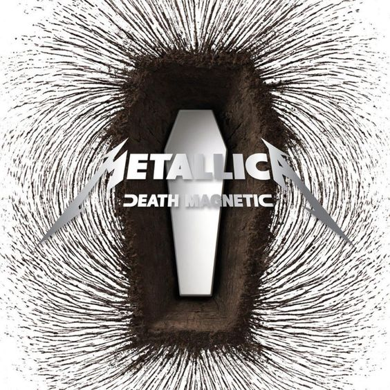

A Death Magnetic a Metallica 2008-ban megjelent kilencedik stúdióalbuma. A lemez fontos fordulópontot jelentett a zenekar pályafutásában, mivel sok rajongó szerint visszatérést hozott a klasszikus thrash metal hangzáshoz a kísérletezőbb előző korszak után.
Az album olyan dalokat tartalmaz, mint a The Day That Never Comes, az All Nightmare Long és a My Apocalypse. A lemez gyors tempói, összetett szerkezetei és hosszabb szerzeményei a Metallica nyolcvanas évekbeli munkáit idézték.
A Death Magnetic jelentős kritikai és kereskedelmi siker lett, számos ország albumlistájának élén debütált. A rajongók és a szakma is pozitívan fogadta a zenekar energikus visszatérését a gyökereihez.
A 2009-es Grammy-gálán a Metallica három díjat is nyert az albumhoz kapcsolódóan. A My Apocalypse elnyerte a Best Metal Performance díjat, emellett az album megkapta a Best Recording Package elismerést, valamint a Suicide & Redemption a Best Rock Instrumental Performance kategóriában győzött.
A Death Magnetic Grammy-sikerei bizonyították, hogy a Metallica több mint huszonöt évvel a megalakulása után is képes meghatározó és elismert alkotásokat létrehozni. Az album a modern Metallica-korszak egyik legfontosabb mérföldkövének számít.
